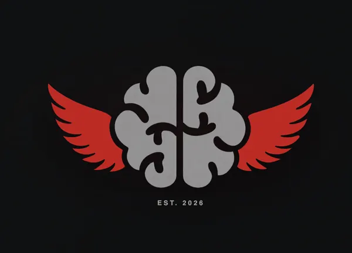
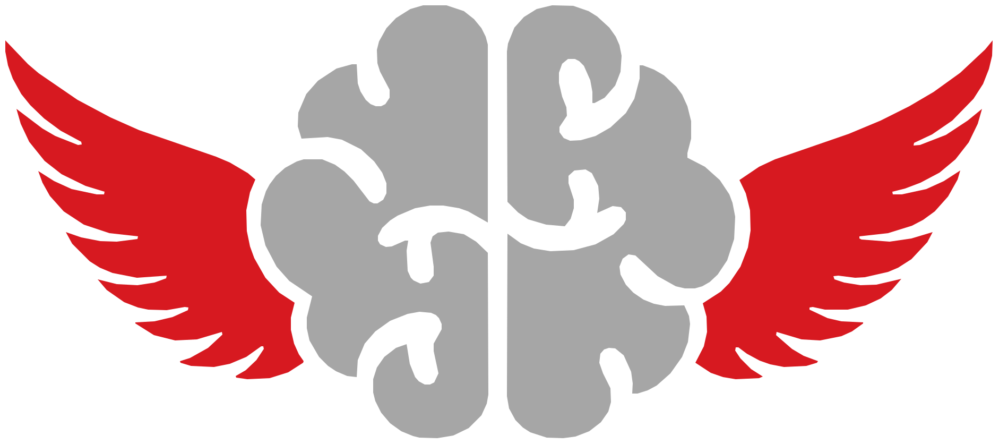

Advocacy. Research. Education — built by Rutgers students for the fight against glioblastoma.

Mission: Advancing awareness and research efforts to make GBM a curable condition while creating a hopeful and positive space for everyone affected by it
The Ty Miller Lab at Case Western Reserve University, Dana-Farber Cancer Institute, Children's Hospital Los Angeles/Saban Research Institute, and the Preston Robert Tisch Brain Tumor Center at Duke.

Apply to up to three, no experience required. Click a card to see what you'll actually do.
Content, campaigns, and event promotion.
Speaker events, programming, campus collabs.
Awareness and fundraising for GFG's mission.
Contribute to the Journal; shape research initiatives.
Budgeting, coordination, and growth strategy.
Which means the biggest opportunities, the ones with your name on them, are still unclaimed.